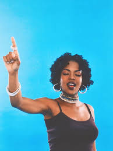
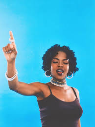

Lauryn Hill
Lauryn Hill is a multifaceted artist whose influence stretches across music, culture, and activism. Bursting into the spotlight with her groundbreaking solo album, The Miseducation of Lauryn Hill, she captivated audiences with her soulful voice, poignant lyrics, and innovative fusion of R&B, hip-hop, and neo-soul. A member of the iconic group The Fugees, Hill's work has left an indelible mark on the music industry, earning her numerous accolades, including Grammy Awards. Beyond her musical achievements, Hill is renowned for her powerful messages on social justice and empowerment, making her not only a musical icon but also a voice for change.
Lauryn Hill’s legacy extends far beyond her remarkable discography. She has consistently used her platform to advocate for social justice, challenge norms, and inspire change. Her artistry, marked by profound emotional depth and raw honesty, continues to resonate with audiences around the world. As both a groundbreaking musician and a powerful activist, Lauryn Hill remains a transformative figure whose influence and message endure, reminding us of the power of art to drive meaningful change.

 
